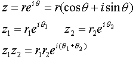
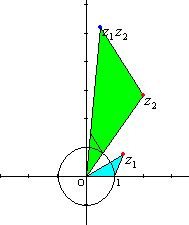

Meaning of Multiplication of Complex Variables
Introduction
Multiplication of complex variables means the rotation-enlargement, a rotation and a central enlargement combined.
In the right, the green triangle is similar to blue triangle.


Applet
Drag the red point.